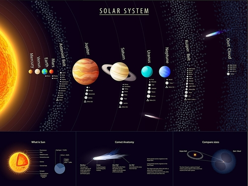

Solar system
|
The Solar System is the gravitationally bound system of the Sun and the objects that orbit it, either directly
or indirectly,including the eight planets and five dwarf planets as defined by the International Astronomical Union (IAU). Of the objects that orbit the Sun directly, the largest eight are the planets, with the remainder being smaller objects, such as dwarf planets and small Solar System bodies. |
 |
|
The Solar System was formed 4.6 billion years ago from the gravitational collapse of a giant interstellar molecular cloud.
The four smaller inner planets, Mercury, Venus, Earth and Mars, are terrestrial planets, being primarily composed of rock and metal. The four outer planets are giant planets, being substantially more massive than the terrestrials. The two largest, Jupiter and Saturn, are gas giants, being composed mainly of hydrogen and helium; the two outermost planets, Uranus and Neptune, are ice giants, being composed mostly of substances with relatively high melting points compared with hydrogen and helium, called volatiles, such as water, ammonia and methane. |
|
|
The inner Solar System is the region comprising the terrestrial planets and the asteroid belt.Composed mainly of silicates and
metals, the objects of the inner Solar System are relatively close to the Sun; the radius of this entire region is less than the distance between the orbits of Jupiter and Saturn. This region is also within the frost line, which is a little less than 5 AU (about 700 million km) from the Sun. |
|
|
The outer region of the Solar System is home to the giant planets and their large moons. The centaurs and many short-period comets
also orbit in this region. Due to their greater distance from the Sun, the solid objects in the outer Solar System contain a higher proportion of volatiles, such as water, ammonia, and methane than those of the inner Solar System because the lower temperatures allow these compounds to remain solid. |